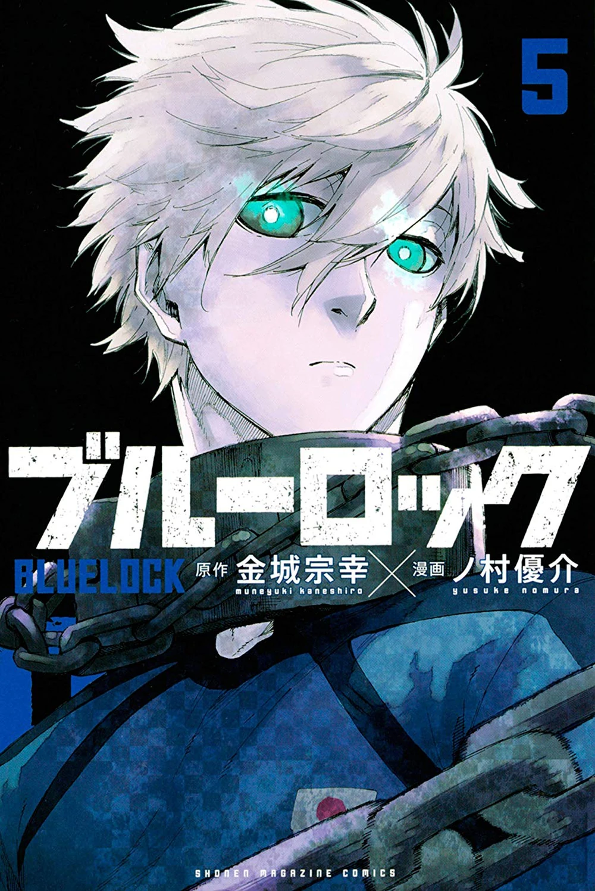
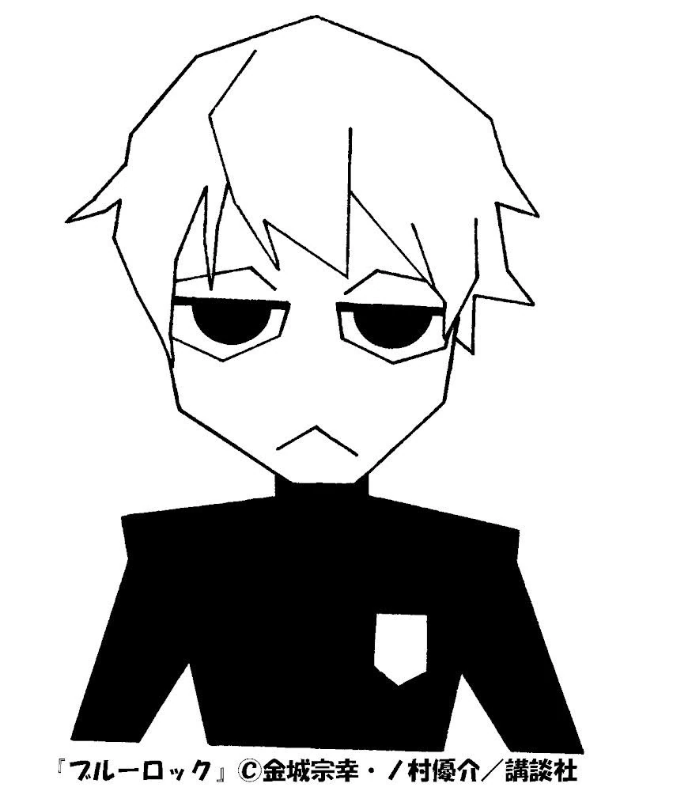
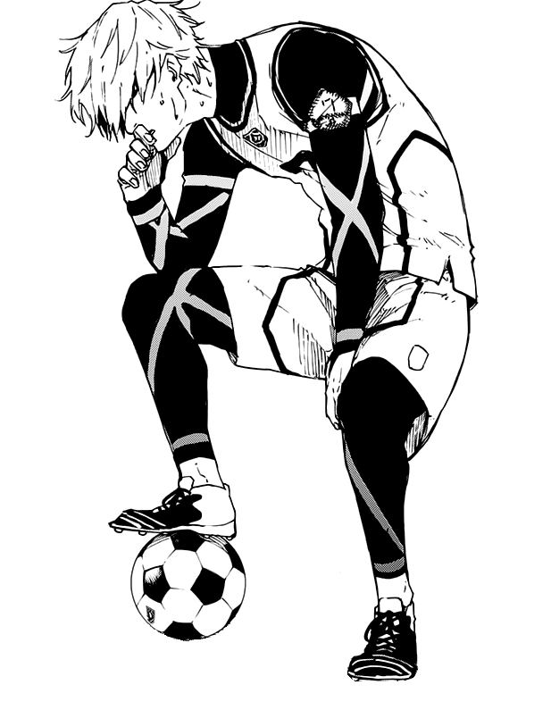
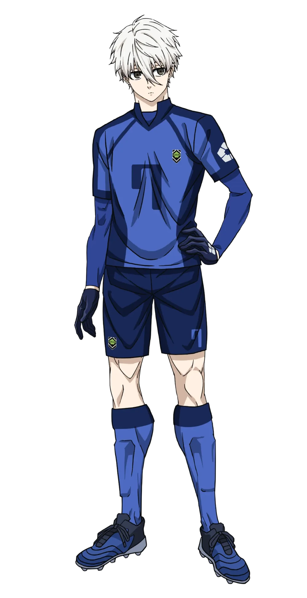

Japanese: 凪 誠士郎
Rōmaji: Nagi Seishirō
Alias(es): "Mr Hassle Man"
Age: 17
Birthday: May 6
Height: 190cm / 6"3
Hair color: White
Eye color: Gray
Team: Manshine City (England)
Jersey Numbers: 7 (Japan U-20) / 11 (Manshine City)
Position(s): Central Attacking Midfielder
Nagi is a tall young man with a lean but muscular build. He is shown to have medium length white hair that leaves a V-shaped fringe in between his eyes. He has gray-colored eyes with large irises.
Nagi is a very lazy and unmotivated person with an outstanding aptitude for football. He's unnaturally talented, with amazing reflexes, good speed, and jumping skills. But he has no interest in going pro or even playing at all at first. As long as he can get a decent job and keep living a lax life, he is content with doing nothing forever and often appears lethargic in his speech and body language. Introverted to a fault, he lives by himself in an apartment his parents pay for with only a pet cactus for company. He was shown to have no friends in high school before meeting Reo, and he frequently got gossiped about or possibly bullied. Even so, he demonstrates no interest in socializing and often has to be dragged into things by others, especially Reo. He initially does not want to put any effort into football and belittles those who are weak and talentless at the game since such things are easy for him. He doesn't even know anything about the best football players in the world, much to the chagrin of his competitors. At first, he is shown as indifferent to playing soccer and becoming the world's best striker, preferring to play video games or skip training altogether. He exhibits behavior like that of a shut-in and may actually be addicted to his phone. He struggles to let go of it when Anri tries to confiscate his items, and Reo is even able to bribe him into playing when he reminds him he can get it back with the goal reward system.
Despite all this, Nagi shows that he can become motivated if he's challenged. Upon entering Blue Lock, he encounters players who get him invested in the game to the point that he's willing to make strategies of his own and go against Reo, whom he otherwise obeys, just so he can do as little thinking as possible. Nagi also has a bold side to himself that comes out around Baro the most often due to an early rivalry that started with him calling him Reo's "slave". He often antagonizes him and gets in his face when his arrogance irritates him, something very few characters are willing to do given how intimidating Baro can be. But when he wants to play, he demonstrates a deep sense of teamwork and can synergize with many players, Reo and Isagi in particular. Although Nagi comes off as an apathetic person, he is a reliable player who has some of the most unpredictable moves on the field, perhaps Gagamaru only rivals him in terms of creativity.
After playing against Team Z at the end of the First Selection and experiencing his first ever loss, Nagi starts to take more initiative and deal with the frustration of losing. He finally starts to have motivation and is willing to explore these feelings alone if necessary, and this only happens because he notices that his friend and teammate, Reo Mikage, seems to be at a loss against Team Z. Despite his initially indifferent exterior, Nagi strives to improve his soccer skills as a result of his team's loss to Yoichi Isagi. This drive to improve follows him in later arcs, and he even tarnishes a friendship because of it. By the time of the Neo-Egoist League, beating Isagi was Nagi's most important driving force.
Nagi does seem to care about his friends and teammates, especially his best friend Reo, even though their relationship turns rocky from the Second Selection onward because of Reo's possessiveness over Nagi, which clouds his view of their shared dream of winning the World Cup. However, he is, at his core, an egoist like some of the best players in Blue Lock. He cares only about his ambition, his dream, and winning.
Nagi tends to clash with people he doesn't like. When he meets Baro after Nagi and Isagi's loss to Rin Itoshi, they immediately begin to argue and provoke each other, competing in the field about who's the best of both, challenging frequently in a 1 vs. 1, giving each other insults, and even fighting for who will have the single bed in a room for teams of three members.